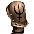
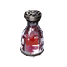
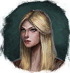

Имперский наплечник
Предметы / С врагов
Открыть в интерактивной вики →
| Вес | 8 |
|---|---|
| Цена | 100 |
Описание
Компонент, используемый для изготовления

Средняя Фляга Силы. Её создает
Миранда в корчме Лезгара.| Ингредиент для изготовления Средней фляги силы. Изготавливает Миранда в Корчме Лезгара. |
Дроп

Применение
|
Как добыть
Получаем за победу над:
|